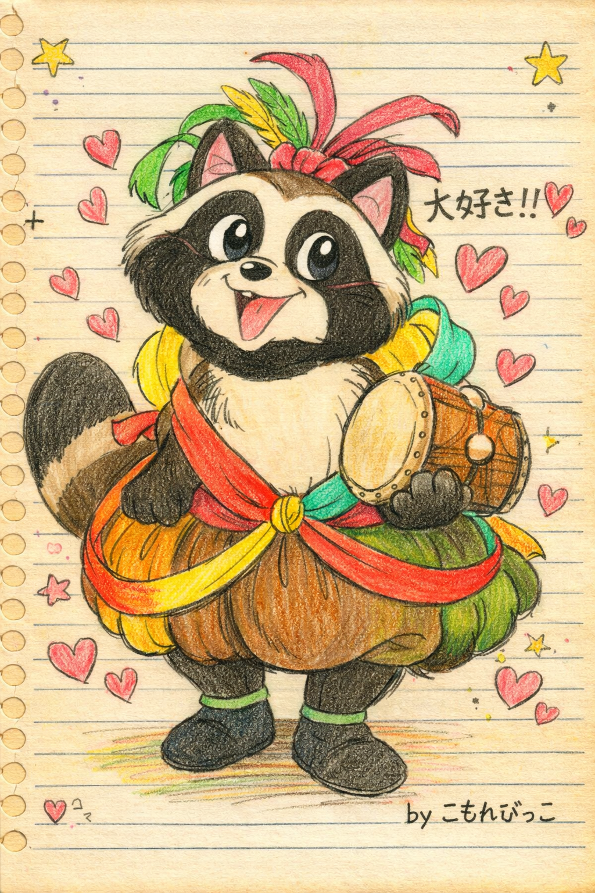

ようこそ「こもれびゆうえんちのお部屋」へ！！ヽ(´ー｀)ノ
あなたは 024681 人目のお客様です(^^)
※キリ番を踏んだ方は掲示板で報告してくださいね♪
◆ 最新更新情報 ◆
2003.09.14 … リンク集を更新しました
2003.07.22 … 掲示板を新しくしました
2003.05.03 … スタジオ紹介ページを追加！
2003.02.11 … キャラ紹介ページにイラスト追加(^^)
2003.07.22 … 掲示板を新しくしました
2003.05.03 … スタジオ紹介ページを追加！
2003.02.11 … キャラ紹介ページにイラスト追加(^^)
◆ このサイトについて ◆
ここは1991年〜1997年にきらら放送で放送されていた
子ども番組「こもれびゆうえんち」のファンサイトです☆
管理人こもれびっこが個人的に運営しています。
小さい頃大好きだった番組のことを残しておきたくて作りました。
同じように覚えてる人がいたら嬉しいです(*´∀｀*)
◆ ご注意 ◆
・このサイトは非公式のファンサイトです
・画像の直リンクはご遠慮ください
・リンクはトップページにお願いします
◆ バナー ◆
リンクしてくださる方はこちらのバナーをお使いください
※直リンクOKです！
